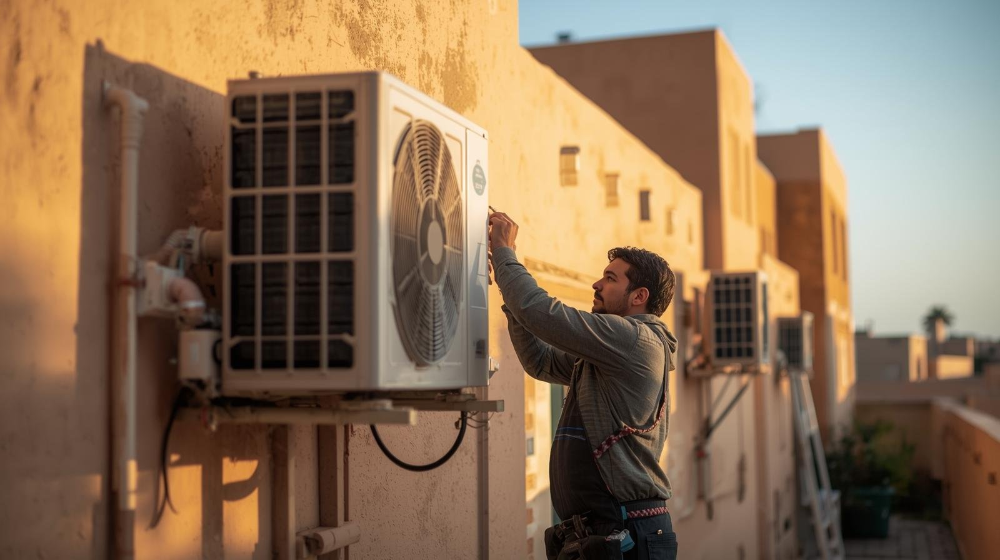

صيانة مكيفات حي الرمال

إذا كنت تبحث عن خدمة موثوقة في صيانة مكيفات حي الرمال فالحل مع شركة نقل الرياض، الشركة الرائدة في تقديم خدمات التكييف داخل أحياء الرياض، تحرض الشركة على توفير فنيين متخصصين في فحص وصيانة جميع أنواع المكيفات سواء سبليت أو شباك، مع استخدام أحدث الأدوات ومواد التنظيف التي تضمن كفاءة عالية وعمر أطول لجهازك، كما نقدم خدمة سريعة بأسعار مناسبة مع التزام كامل بالمواعيد ورضا العملاء، اختيارك لشركة نقل الرياض في صيانة مكيفات حي الرمال يضمن لك الراحة طوال فصل الصيف، لا تتردد وتواصل معنا الآن.
خدمات صيانة مكيفات حي الرمال على مدار الساعة
تعتبر خدمة صيانة مكيفات حي الرمال على مدار الساعة من أهم المميزات التي يبحث عنها سكان الحي، خاصة في أوقات الصيف الحارة التي تشهدها مدينة الرياض في و ارتفاع درجات الحرارة، توفر هذه الخدمة راحة للعملاء من خلال الاستجابة الفورية عند حدوث أي عطل مفاجئ في المكيف، سواء كان في ساعات النهار أو حتى منتصف الليل، فرق الدعم والفنيين مستعدة دائمًا للتوجه إلى مكان العميل فورًا مع تجهيز المعدات والأدوات اللازمة لإصلاح الأعطال في وقت قياسي، وهذا يمنح العميل شعورًا بالاطمئنان بأن المكيف سيظل يعمل بكفاءة طوال الوقت دون أن تتعطل حياته اليومية بسبب أي مشكلة مفاجئة، تقدم شركة نقل الرياض هذه الخدمة بجودة عالية وأسعار تنافسية، لذلك لا تتردد وتواصل معها الآن من خلال وسائل التواصل المتاحة أمامك.
أفضل فنيين متخصصين في صيانة مكيفات حي الرمال
عند الحديث عن أفضل فنيين صيانة مكيفات حي الرمال، فإننا نتحدث عن خبرة ومهارة اكتسبها هؤلاء الفنيون عبر سنوات طويلة من العمل الميداني، فهم لا يكتفون بالمعرفة النظرية فقط، بل يتمتعون بقدرة عالية على التعامل مع كافة أنواع الأعطال سواء كانت كهربائية، ميكانيكية أو مرتبطة بتسريب الفريون، إضافة إلى ذلك، يلتزم الفنيون بأحدث معايير الجودة ويستخدمون أجهزة متطورة للكشف عن الأعطال قبل أن تتحول إلى مشكلات أكبر، ما يميزهم أيضًا هو التزامهم بالمواعيد واحترام وقت العميل، إلى جانب تقديم ضمان حقيقي على أعمال الصيانة المنفذة، وهو ما يجعل سكان حي الرمال يفضلون التعامل معهم بشكل متكرر، إذا كنت تبحث عن مثل هؤلاء الفنيين فإن شركة نقل الرياض تمتلك مجموعة كبيرة من الفنيين المدربين على أعلى مستوى.
خطوات صيانة مكيفات حي الرمال باحترافية وضمان
عملية الصيانة الاحترافية تمر بعدة مراحل دقيقة تضمن للعميل خدمة عالية الجودة، إليك هذه الخطوات:
- تبدأ الخطوة الأولى بزيارة الموقع ومعاينة المكيف لتحديد نوع العطل بشكل دقيق.
- ثم يقوم الفني بفك القطع الداخلية بحرص وتنظيف الفلاتر والوحدة الداخلية والخارجية باستخدام مواد آمنة.
- بعد ذلك يتم فحص مستوى الفريون وإعادة شحنه عند الحاجة، مع اختبار الضاغط للتأكد من أنه يعمل بكفاءة.
- كما يتم فحص التوصيلات الكهربائية والتأكد من عدم وجود تلف في الأسلاك أو دوائر التحكم.
- وأخيرًا، يجري الفني اختبارًا عمليًا للتأكد من أن الهواء البارد يعمل بكفاءة، مع إعطاء العميل ملاحظات للحفاظ على المكيف بعد الإصلاح.
هذه الخطوات تضمن أن المكيف سيعمل بكامل طاقته لفترة طويلة وتساعد على زيادة عمره الافتراضي.
أسعار صيانة مكيفات حي الرمال حسب نوع العطل
تختلف أسعار صيانة مكيفات حي الرمال بشكل طبيعي باختلاف طبيعة العطل ونوع الجهاز. فالأعطال البسيطة مثل تنظيف الفلاتر أو شحن الفريون تعتبر منخفضة التكلفة مقارنة بإصلاح الأعطال الكبرى مثل تغيير الضاغط أو إصلاح لوحة التحكم الإلكترونية، أيضًا يلعب نوع المكيف دورًا مهمًا في تحديد السعر، فالمكيفات السبليت تحتاج لجهد مختلف عن المكيفات المركزية أو الشباك، من الأفضل دومًا أن يقوم الفني بعمل فحص شامل قبل تحديد التكلفة النهائية، مما يمنح العميل شفافية كاملة في معرفة قيمة الإصلاح، بعض الشركات تقدم أيضًا عروض باقات صيانة دورية بأسعار مخفضة لتقليل التكلفة على المدى الطويل، مثل شركة نقل الرياض الرائدة في مجال صيانة مكيفات حي الرمال.
لماذا تختار خدمة صيانة مكيفات حي الرمال المحلية؟
اختيار خدمة صيانة مكيفات حي الرمال من شركة نقل الرياض يمنحك الكثير من المزايا التي لا توفرها الشركات البعيدة، أهمها سرعة الاستجابة والوصول السريع إلى منزلك أو مكتبك دون تأخير، فالفنيون متواجدون دائمًا داخل الحي، مما يسهل عليهم الحضور فور تلقي طلبك، خصوصًا في حالات الأعطال الطارئة التي تحتاج إلى تدخل فوري، كما أن الأسعار غالبًا ما تكون مناسبة أكثر، لعدم وجود تكاليف إضافية خاصة بالانتقال من مناطق بعيدة.
إلى جانب ذلك، يتمتع الفنيون المحليون بخبرة عملية في التعامل مع المكيفات المنتشرة في المنطقة ومعرفة دقيقة بالأعطال الشائعة التي تتكرر نتيجة طبيعة المناخ الحار أو الاستخدام المستمر خلال فصل الصيف، هذا يجعلهم قادرين على تحديد المشكلات بسرعة وتقديم حلول عملية تضمن عودة المكيف للعمل بكفاءة عالية، كما أن الشركات المحلية في حي الرمال تحرص على بناء علاقة ثقة مع العملاء، فتقدم لهم خدمات ما بعد الصيانة وضمانات على العمل، مما يمنح العميل راحة بال وثقة أكبر في الخدمة.
صيانة مكيفات حي الرمال لجميع الأنواع والماركات
تتميز خدمات صيانة مكيفات حي الرمال بشركة نقل الرياض بأنها شاملة لمختلف الأنواع والماركات العالمية، مما يوفر راحة كبيرة للعملاء الذين يمتلكون أجهزة متنوعة داخل منازلهم أو شركاتهم، الفنيين المحليين لديهم خبرة في صيانة المكيفات السبلت، الشباك، الدولابي، وحتى المكيفات المركزية المستخدمة في الفلل والمكاتب الكبيرة.
كما يتم التعامل مع جميع الماركات الشهيرة مثل (دايكن، سامسونج، إل جي، ميديا، جري وغيرها)، حيث يعرف الفني كل التفاصيل الخاصة بكل جهاز، مما يساعده على معالجة المشكلات بشكل أسرع وأكثر دقة، وهذا يضمن للعميل خدمة متكاملة مهما كان نوع جهازه أو ماركته.
نصائح للحفاظ على كفاءة المكيف بعد الصيانة في حي الرمال
بعد الانتهاء من عملية الصيانة، ينصح فنيون صيانة مكيفات حي الرمال باتباع مجموعة من التعليمات للحفاظ على كفاءة المكيف لأطول فترة ممكنة، من أهم هذه النصائح: تنظيف الفلاتر بشكل دوري مرة كل أسبوعين على الأقل، وضبط درجة الحرارة على 24 – 26 درجة مئوية لتجنب التحميل الزائد على الجهاز، كما يُفضل إغلاق الأبواب والنوافذ عند تشغيل المكيف لتقليل الفاقد من التبريد.
أيضًا، من الضروري عدم تشغيل المكيف لفترات طويلة جدًا دون إيقافه، وإجراء صيانة دورية مرتين في العام على الأقل، قبل فصل الصيف وقبل فصل الشتاء، لضمان استعداد الجهاز للعمل بكفاءة، اتباع هذه الإرشادات يساعد على تقليل الأعطال المفاجئة وتخفيض فاتورة الكهرباء بشكل ملحوظ.
كيفية التواصل مع أقرب مركز صيانة مكيفات في حي الرمال
لضمان راحة وسرعة في الحصول على الخدمة، يُفضل دائمًا التواصل مع مركز متخصص قريب منك داخل الحي. وإذا كنت تبحث عن شركة موثوقة توفر لك كل ما تحتاجه من صيانة مكيفات حي الرمال، فإن شركة نقل الرياض هي خيارك الأمثل.
تقدم الشركة خدمة دعم عملاء متاحة على مدار الساعة للرد على استفساراتك وحجز المواعيد في أسرع وقت، مع توفير فنيين متخصصين يصلون إلى موقعك دون تأخير، يمكنك التواصل بسهولة عبر الاتصال الهاتفي المباشر أو من خلال خدمة الواتساب لحجز خدمة صيانة عاجلة أو تحديد موعد مناسب لك، ومع التزام الشركة بالشفافية في الأسعار وضمان جودة الخدمة، ستجد أن تجربة التواصل والحجز سلسة وآمنة بالكامل.
اختيارك لشركة نقل الرياض يعني أنك تتعامل مع فريق احترافي يهتم براحتك أولًا، ويضمن أن مكيفك سيعود للعمل بكفاءة عالية بأسرع وقت ممكن.
عروض وخصومات على صيانة مكيفات حي الرمال
تقدم شركة نقل الرياض أفضل العروض والخصومات على خدمات صيانة مكيفات حي الرمال لتكون الخيار الأول لكل من يبحث عن الجودة والسعر المناسب معًا، الشركة توفر خصومات موسمية على الصيانة الدورية، بالإضافة إلى باقات مميزة تشمل تنظيف شامل وفحص كامل للمكيف مع ضمان طويل الأمد على الخدمة، كما تتيح الشركة عروضًا خاصة عند صيانة أكثر من مكيف داخل المنزل أو المكتب، مما يمنح العملاء فرصة لتقليل التكلفة مع الحفاظ على كفاءة جميع الأجهزة.
ومع حرص شركة نقل الرياض على راحة عملائها، فإنها تقدم أيضًا خصومات حصرية لطلبات الحجز عبر الهاتف أو الواتساب، مع إمكانية تحديد موعد يناسبك دون أي تأخير. لذلك، إذا كنت تبحث عن عروض حقيقية وخصومات توفر لك المال وتضمن لك خدمة موثوقة على يد أفضل الفنيين، فإن نقل الرياض هي الاختيار الأمثل.
للحفاظ على برودة منزلك وكفاءة مكيفاتك، لا تتردد في الاعتماد على شركة نقل الرياض المتخصصة في صيانة مكيفات حي الرمال، حيث نوفر فنيين محترفين، صيانة سريعة، خصومات مميزة، وضمان على الخدمة. للتواصل معنا وحجز خدمتك الآن، يمكنك الاتصال مباشرة أو عبر وسائل التواصل المتاحة أمامك.